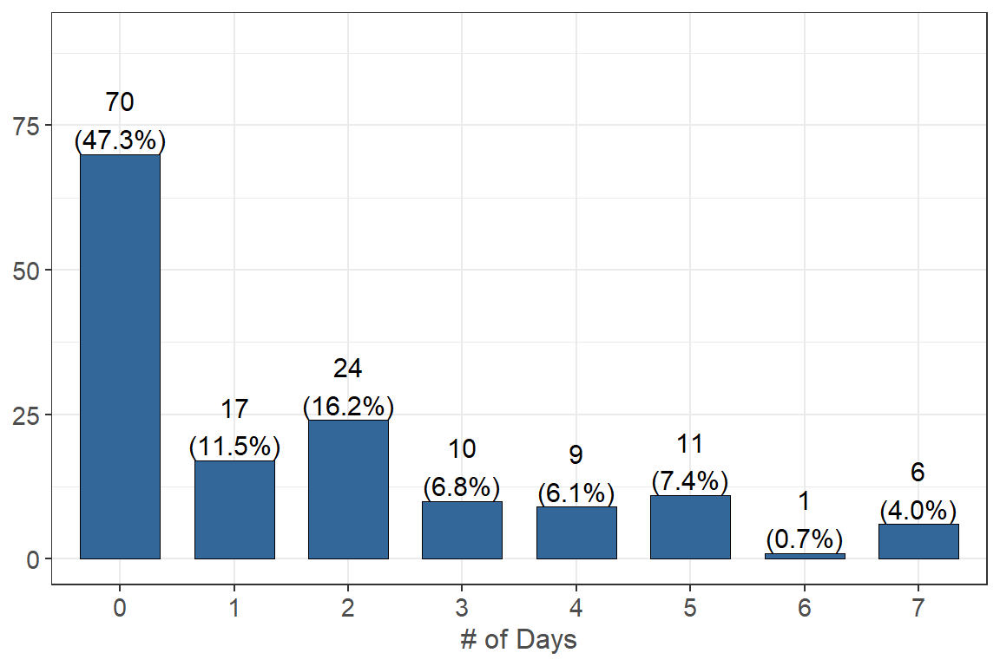
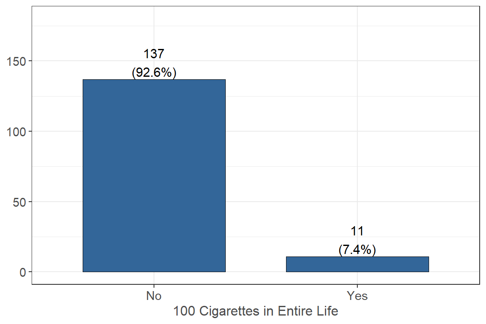
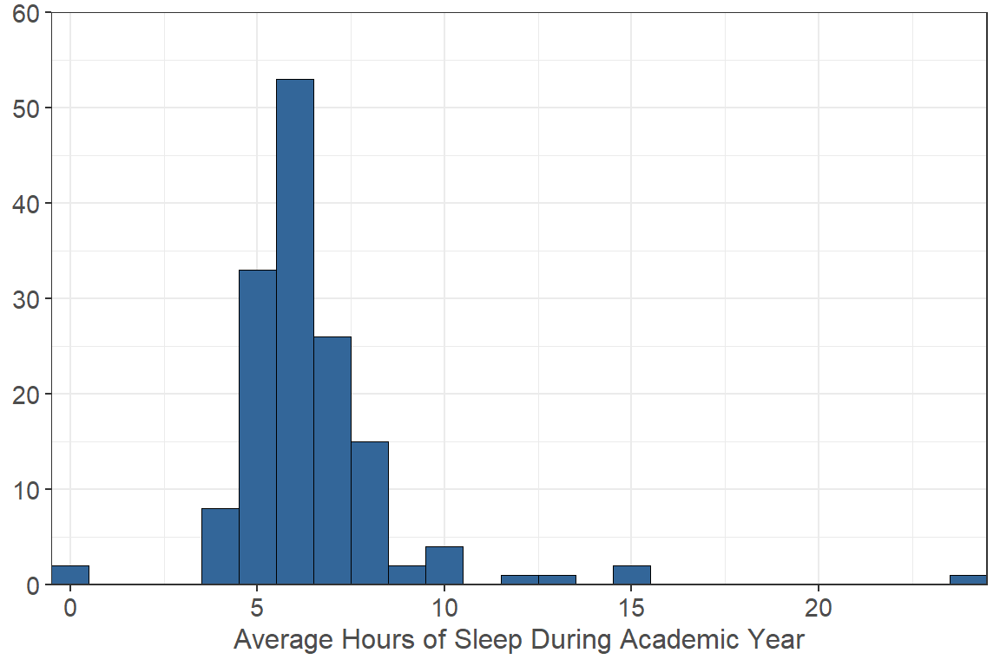
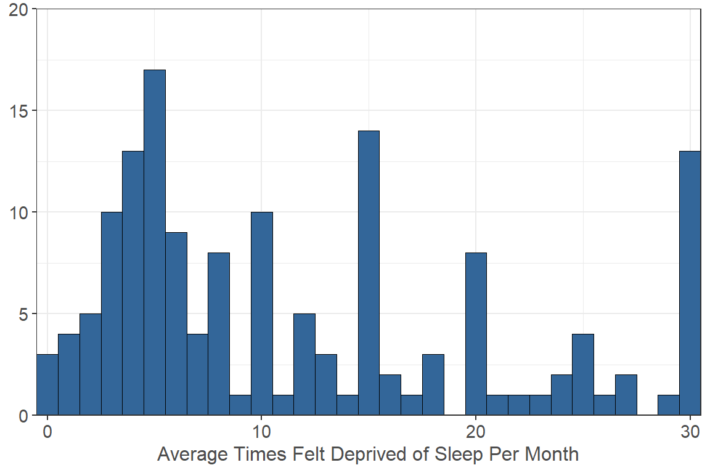
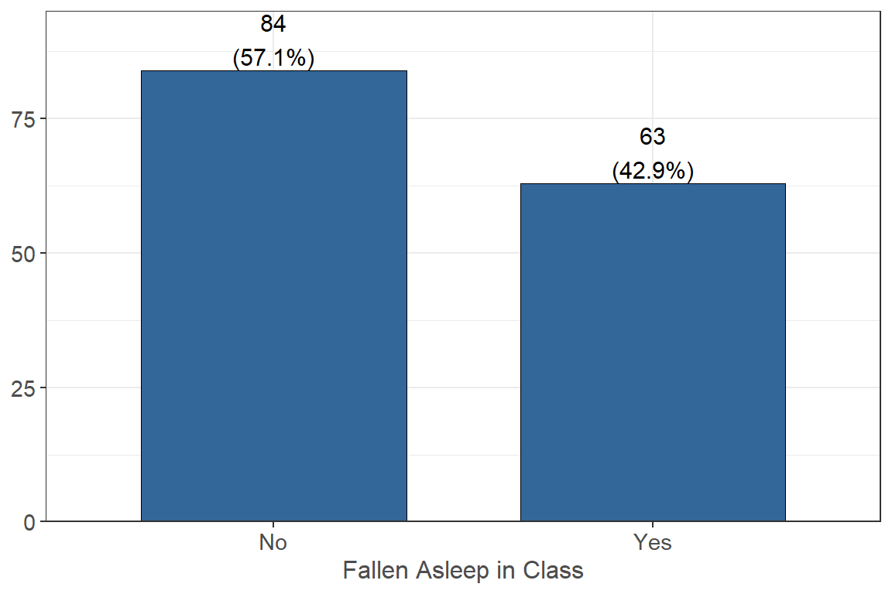
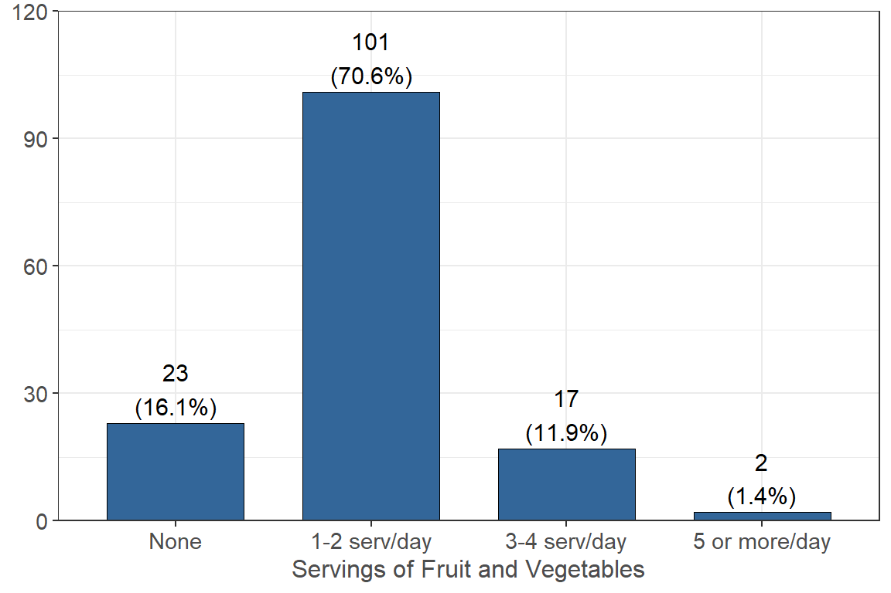
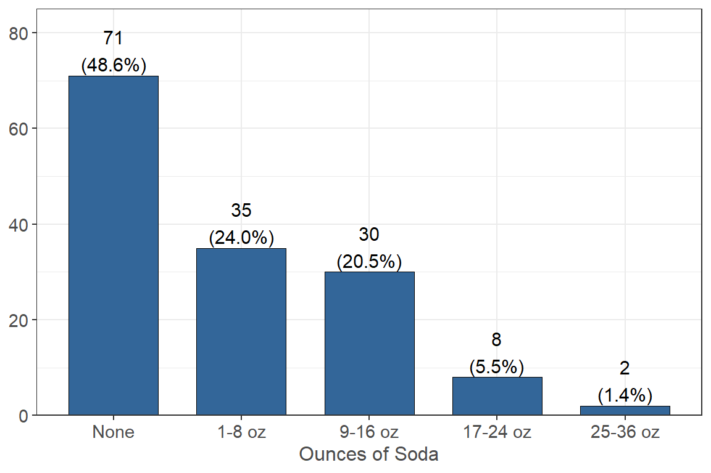
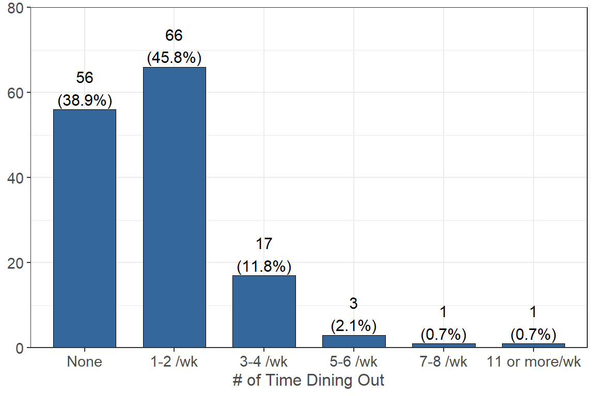
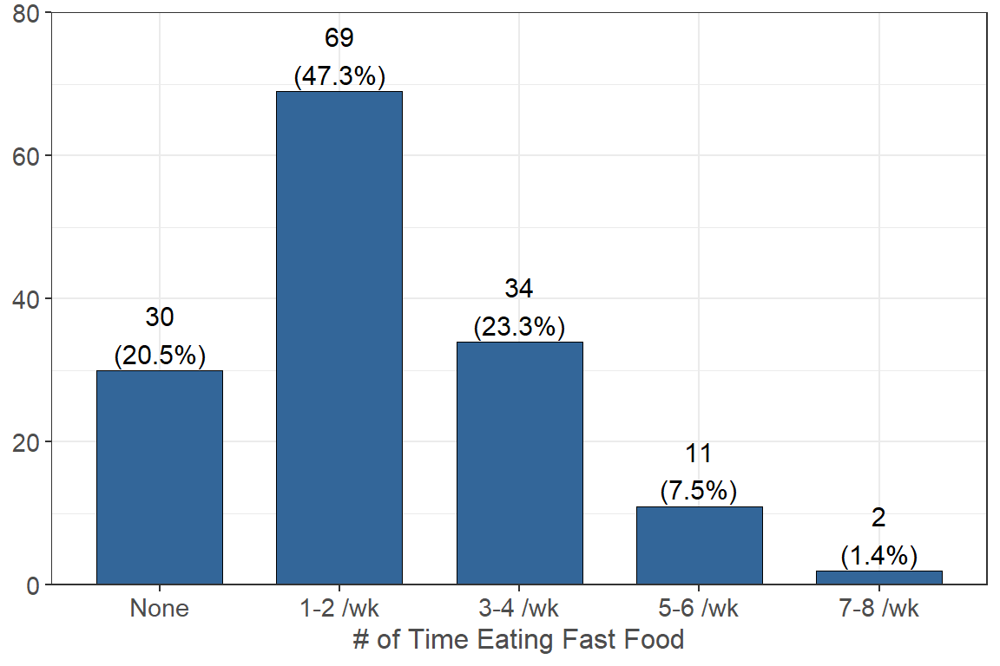
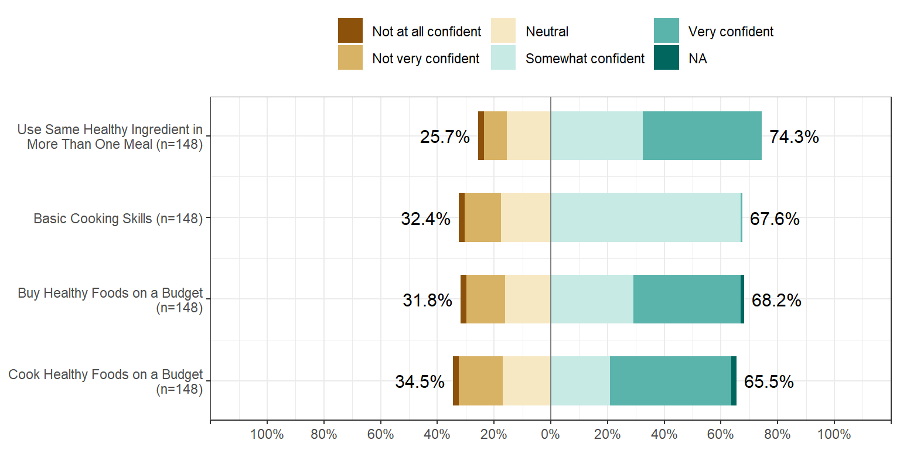

Health
Physical Activity
On how many of the past 7 days did you:
Do moderate-intensity cardio or aerobic exercise (caused a noticeable increase in heart rate, such as brisk walk) for at least 30 minutes?
One fourth, or 25.0% (n = 37) of respondents, reported that they do not do any days a week of cardio or aerobic exercise for at least 30 minutes, 11.5% (n = 17) reported that they exercise for 1 day, and 18.9% (n = 28) reported that they exercise for 2 days.
Do vigorous-intensity cardio or aerobic exercise (caused large increases in breathing or heart rate, such as jogging) for at least 20 minutes?
36.5% (n = 54) of respondents reported that they did not do vigorous-intensity cardio for at least 20 minutes per day in the past 7 days, 18.2% (n = 27) reported they did for 1 day, and 20.9% (n = 31) reported they did for 2 days.
Do vigorous-intensity cardio or aerobic exercise (caused large increases in breathing or heart rate, such as jogging) for at least 20 minutes?

Almost half, or 47.3% (n = 70) of respondents, that they did not do 8-10 strength training exercises per day in the past 7 days, 11.5% (n = 17) reported they did for 1 day, and 16.2% (n = 24) reported they did for 2 days.
Tobacco Use
Have you smoked at least 100 tobacco cigarettes in your entire life?

Only 7.4% (n = 11) of respondents reported that they have smoked over 100 cigarettes in their entire life and 92.6% (n = 137) reported they have not.
How frequently do you currently smoke tobacco cigarettes?

Only 3.4% (n = 5) respondents reported that they smoke cigarettes on some days and 96.6% (n = 142) reported that they do not smoke cigarettes.
Sleep
On average, during the academic year, how many hours of sleep do you get in a typical 24-hour period during the week?

The majority of respondents, or 75.68%, reported getting an average of 5-7 hours of sleep in a typical 24-hour period during the academic year.
On average, during the academic year, how many hours of sleep do you get in a typical 24-hour period during weekends?
The majority of respondents, or 79.06%, reported getting an average of 6-10 hours of sleep in a typical 24-hour period during the weekends.
On average, how many times per month do you feel deprived of sleep?

Select the activities that cause you to feel deprived of sleep
| n | % | |
|---|---|---|
| Studying or finishing coursework | 142 | 94.7 |
| Working a paid, or unpaid job or internship | 75 | 50.0 |
| Attending social activities or events | 69 | 46.0 |
| Spending time with family or friends | 66 | 44.0 |
| Watching movies, playing games, social media etc. | 70 | 46.7 |
| Other | 14 | 9.3 |
The majority of respondents, or 94.7%, reported that the activity of studying or finishing coursework caused them to feel deprived of sleep.
How frequently do you feel tired while at work or school?

Most respondents, or 55.4%, reported occasionally feeling tired while at work or school, while 35% reported always feeling tired at work or school.
Have you fallen asleep in class in the past 12 months?

More than half of respondents, or 57.1%, reported they had not fallen asleep in class in the past 12 months.
Eating and Cooking Habits
For each of the following statements, indicate how strongly agree or disagree about your current eating and cooking habits

How many servings of fruits and vegetables do you usually consume per day?

The majority of respondents (n = 101 70.6%) reported that they consume 1-2 servings of fruit and vegetables a day and 16.1% (n = 23) reported that they consume none.
Drinks (juice, water, alcohol, etc.)
How many ounces of 100% fruit juices like orange juice, apple juice or grape juice do you consume each day?

More than half, or 52.4% (n = 76) of respondents, reported that they drink no 100% fruit juice each day and 34.5% (n = 50) reported that they drink between 1 to 8 ounces a day.
How many ounces of regular soda, cola, or pop, sports drink, or energy drinks do you consume each day?

Almost half, or 48.6% (n = 71) of respondents, reported that they don’t drink any soda each day and 24.0% (n = 35) reported they drink between 1 to 8 ounces a day.
How many ounces or cups of water or unsweetened clear drinks, such as tea, do you consume each day?

About 19.0% (n = 27) of respondents reported that they drink 1-8 ounces of water or other unsweetened drinks a day, 7.0% (n = 10) reported they do not drink any ounces of unsweetened drinks a day, and 9.2% (n = 13) reported that they drink more than 65 ounces a day.
How often do you consume at least one serving of alcohol?

Half, or 50.0% (n = 73) of respondents, reported that they do not drink alcohol in a week and 43.1% (n = 63) reported they drink at least one serving of alcohol between 1 to 2 days a week.
Typically, how many servings of alcohol do you consume when you drink alcohol?

More than half, or 54.7% (n = 35) of respondents, reported that when they consume alcohol, they consume between 1 to 2 servings and 26.6% (n = 17) reported that when they consume alcohol, they consume between 3 to 4 servings.
Dining Out or Meal Replacements
How frequently do you eat out at family-style or sit-down restaurants/café types of dining establishment per week?

38.9% (n = 56) of respondents reported that they do not go out to sit-down restaurants in a week and 45.8% (n = 66) reported that they go out between 1 to 2 times in a week.
How frequently do you eat from fast food restaurants, convenience stores, or vending machines for a meal or meal replacement?

20.5% (n = 30) of respondents reported that they do not eat fast food, from convenience stores, or vending machines in a week and 47.3% (n = 69) reported that they eat fast food between 1 to 2 times a week.
The following questions pertain to how comfortable you feel about buying or preparing food

Campus Meal Plans
Does anyone in your household get more than half (11 or more) of their meals per week from another source (e.g. university meal plan)?
The majority of respondents (97.0% n = 129) reported that they do not have any people in their household that have more than half of their meals from another source and 3.0% (n = 4) reported they do.
This work was supported by insert grant information here. Any use of these results in further work must use the following citation:
Center for Healthy Communities, "Website name", June 2020. Retrieved on xx-xxx-xxxx from https://chicocalfresh.github.io/bns-website/index.html